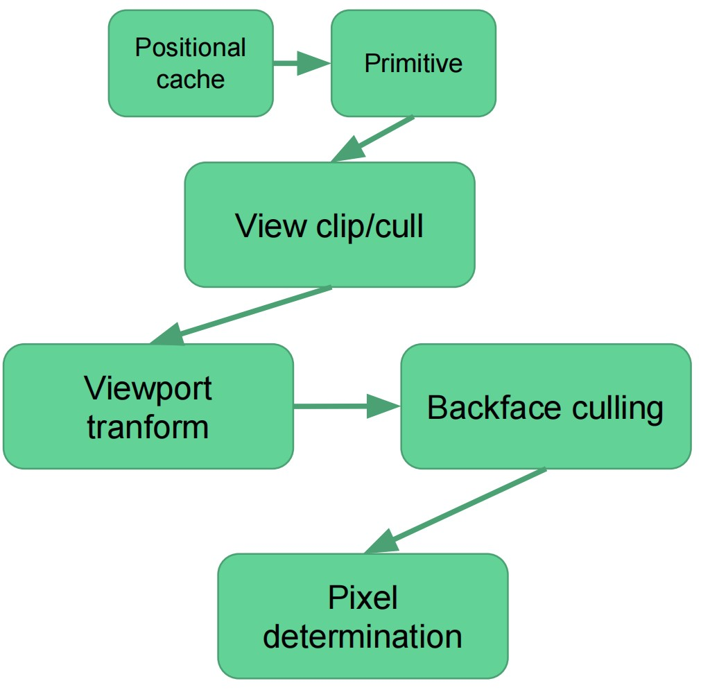
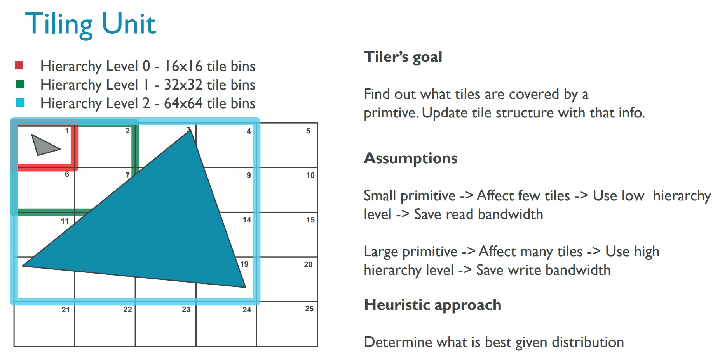

GPU Architecture
Table of Contents
- GPU Architecture
- Quick review of the graphics pipeline
- Mapping the graphics pipeline into the gpu blocks
- How a shader core works
- Some real gpu use cases
- Mobile gpus
- 参考资料
- Mobile GPU approaches to power efficiency
- GPU Framebuffer Memory: Understanding Tiling
- GPU 常识
GPU Architecture note.
<!– more –>
GPU Architecture
- GPU Architectures PPT https://drive.google.com/file/d/12ahbqGXNfY3V-1Gj5cvne2AH4BFWZHGD/view
Quick review of the graphics pipeline
graphics pipeline
图形管线的主要任务是将三角形数据转化为像素。其中涉及到如下多个步骤：
- Geometry processing
将三角形投影到屏幕空间 - Rasterization
确定哪些像素被三角形所覆盖 - Pixel processing
为一个像素赋予一个颜色
详细来说：
- 一开始我们只有顶点数据。包括顶点对应的三维坐标，以及顶点的其他属性
- 对顶点进行 MVP 变换，得到齐次坐标。我们将这些操作称为 vertex shading
- 将前一步得到的顶点进行装配(assembly), 得到几何图元
- 确定这些几何图元覆盖了哪些片段
- 为每个像素赋予一个颜色
逻辑图形管线在 OpenGL 或 DX 的说明文档中有详细描述。其和 GPU 物理设备层面的管线有很大差别，GPU 只需满足 OpenGL/DX 的要求就可以了。
GPU to help
现代的 gpu 可以加速上面列出的图形管线的所有阶段。各个阶段的操作可以被映射到多个特定的硬件模块。其中一些功能是可编程的，由 shader cores 来执行(如：vertex shader, fragment shader)。其他一些则是固定的不可编程的，但是可以通过参数进行配置(如：primitive assembly, blending)。
Mapping the graphics pipeline into the gpu blocks
Anatomy of a GPU
GPU 有如下一些特征：
- GPU 是极度并行化的机器
- 同时有上千个“threads”在执行
- 但是 流程控制很有限, 一些线程会共享程序计数器, 没有进程间通讯
- 这决定了 GPU 非常适合于同时执行很多相互独立的操作
- 同时有上千个“threads”在执行
- 内存带宽非常大
- 每秒上百 GB/s ( 带宽的计算 )
- 但是 延迟非常高(上千个 cycles)
- 因此，延迟隐藏机制非常必要
- 每秒上百 GB/s ( 带宽的计算 )
GPU 通过对 Graphics pipeline 的组织来克服自身的一些限制。
参考资料
- CPU 和 GPU 的区别是什么？ https://www.zhihu.com/question/19903344
- GPU 不能完全取代 CPU 的最大原因是什么？ https://www.zhihu.com/question/22219245
gpu graphics pipline
application stage
CPU 发布命令给 GPU。这些命令可能有：
- 使用这些顶点和索引进行绘制
- 设置 viewport
- 修改状态
- 设置 shaders 使用的常量
- 设置混合使用的混合函数
命令并不会被立即执行。命令会被写入到一个命令缓冲区。GPU 会对命令缓冲区进行解析。然后将命令发送给 graphics pipeline。
- CPU 和 GPU 之间需要有同步点。例如，需要等待 rt 上的所有绘制命令结束以后，才能将该 rt 绑定到一个 texture 上。
- 通常 CPU 为下一帧准备命令，而 GPU 则正在渲染当前帧。即，双缓存区。
- 瓶颈在 CPU 的应用程序，通常填充命令缓冲区的速度不够快，GPU 处于空闲状态。
input assembly unit
- input assembly unit 会从主存中获取索引和顶点，将数据装配为图元。另外还会将图元和系统生成的值关联（例如：primitive id，instance id，vertex id）
- 通常会有一个顶点复用缓冲
- 公用顶点的三角形更可能缓存命中
- 当缓存未命中，意味着需要将顶点发送给 shader system 来进行变换
- 公用顶点的三角形更可能缓存命中
- 当缓存 miss 累积到足够多，就会将一个任务发送给 shader core
- 通常一个 GPU 中会有多个 input assembly unit
- 通常在 drawcall 级别进行工作发布. 例如，将 128 个索引分给不同的 input assembly unit
- 通常在 drawcall 级别进行工作发布. 例如，将 128 个索引分给不同的 input assembly unit
vertex shading
- 该阶段由 shader core 来执行，完全可编程控制
- 最后会输出位置和顶点属性给 pixel shading 使用
- 位置会被存储到 positional cache, 在 primitive assembly/setup 阶段会使用位置
- 属性被存储到另外的 cache，他们只在 pixel shaders 中被使用
rasterization
primitive assembly unit
- 到目前为止，我们只有被变换后的顶点
- primitive assembly unit 从 position cache 中获取位置
- 使用我们在绘制 API 中给的连接信息(GL_TRIANGLE_STRIP, GL_TRIANGLE_FAN, GL_TRIANGLES 等等)，将这些顶点转化为三角形
- 如果三角形不在视口内，则丢弃
- 如果三角形部分在视口内，则进行裁剪
- 裁剪可能会得到多个三角形，会增加消耗，因此使用 guard band 来最小化消耗
- 裁剪可能会得到多个三角形，会增加消耗，因此使用 guard band 来最小化消耗
- 幸存下来的几何图元会执行透视除法(divided by w)和视口变换
- 背面和面积为 0 的三角形会被剔除
- 确定顶点对应的像素
Tips: 在 CPU 端进行 bounding box culling 可以避免 primitive assembly unit 不堪重负(overwhelmed)

triangle rasterization unit
- 确定一个三角形覆盖哪些像素
- 以分层的方式来执行，最少两个层级(Coarse raterization / Fine rasterization)
- 一个 GPU 中由很多个 rasterizers，每个负责屏幕的一部分
- 以分层的方式来执行，最少两个层级(Coarse raterization / Fine rasterization)
- 执行 hierarchical Z 和 early Z
- 组装 2x2 的像素正方形块
- 当 2x2 像素块累积到足够数量，则发送一个 job 给 shader system
- coarse rasterization
- 屏幕被划分为多个 tiles
- 测试三角形和这些 tile 是否有重叠
- 如果三角形没有占用 tile，就不需要判断这些 tile 内的像素是否被三角形覆盖
- 如果三角形没有占用 tile，就不需要判断这些 tile 内的像素是否被三角形覆盖
上图中，屏幕被分为了 6x2 个 tile，每个 tile 中有 5x5 个像素，屏幕内有一个三角形需要被光栅化。蓝色线表示屏幕范围，橙色线表示三角形，绿色 tile 表示需要进行测试的 tile。
Tips:
- 小三角形会导致 coarse rasterization 瓶颈，如果一个三角形只占用了一个像素，那么 coarse rasterization 是没必要的，因为其没有剔除任何 tile。
- 非常细长的三角形对于 coarse rasterization 也是不友好的，每个 tile 中，只有少量的像素是有效的。
- 屏幕被划分为多个 tiles
- hierarchical z unit
- 对 tile 进行 early rejection
- 对于每个 tile (使用 LessEqual 深度比较模式)
- tile 记录当前最大的 z 值
- 如果三角形最小的 z 大于 tile 最大的 z, 则 reject 三角形, 否则，更新 tile 对应的 min z 和 max z
- 如果三角形覆盖了整个 tile，则对 HiZ Buffer 中 minz 和 maxz 的更新可以在 HiZ 模块中直接进行
- 否则，就只能是从 depth cache 中读取 tile 中每个像素的深度，得到 minz 和 maxz，将其返回给 HiZ。此时，会引入一些延迟。
- 如果三角形覆盖了整个 tile，则对 HiZ Buffer 中 minz 和 maxz 的更新可以在 HiZ 模块中直接进行
- hierarchical z unit 可以忽略三角形对应的整个 tile 中所有像素的 pixel shading
- hierarchical z 并不能减少 pixel shading，就算没有 HiZ，应该被剔除的像素，在后续的 early z depth test 中依然会被剔除。(early z 可以减少 pixel shading，被 early z 提出的片段，后续不会执行 pixel shading)
- hierarchical z 提升了剔除像素的效率，减少了读取 depth buffer 的带宽。
- hierarchical z 并不能减少 pixel shading，就算没有 HiZ，应该被剔除的像素，在后续的 early z depth test 中依然会被剔除。(early z 可以减少 pixel shading，被 early z 提出的片段，后续不会执行 pixel shading)
- tile 记录当前最大的 z 值
- 还会执行快速的 z clears
- 只需要将每个 tile 的状态重置为 cleared 就可以了
- 只需要将每个 tile 的状态重置为 cleared 就可以了
Tips:
在任何地方都不会对三角形进行排序，按照三角形被提交的顺序来处理。
HiZ buffer 存储的是低分辨率的深度值，far/near 比例越小，HiZ 就可以更多地剔除被遮挡的 tiles。
- Hierarchical Z-Buffer Visibility (Hi-Z) https://blog.csdn.net/wolf96/article/details/100851090
- 深度解析 AMD GPU Hierarchical Z & Early-z 被诸多限制的原因 https://www.cnblogs.com/opengpu/archive/2009/06/02/amd_gpu_architecture_depth_test.html
- 深入剖析 GPU Early Z 优化 https://zhuanlan.zhihu.com/p/53092784
- Real-Time Rendering 19.7.2 Hierachical Z-Buffer
- Real-Time Rendering 23.7 Depth Culling,Testing,and Buffering
- 为什么 Hi-Z 开启的情况下，从前到后渲染物体会更高效（深度比较模式为 LessEqual）？
深度比较模式为 LessEqual 时, Hi-Z Buffer 中存储的 tile 中深度最大的值, 若当前测试的三角形的最小深度值大于 tile 中深度，则不需要为当前三角形光栅化当前 tile。
Hi-Z Buffer 中的深度并不是实时的，其中的值是随着 depth buffer 中的更新而更新的，从前往后渲染物体，可以使得 Hi-ZBuffer 中一开始的值就是相对精确的值，这样 Hi-Z 可以为后续渲染的三角形剔除更多的 tile。
- depth write on & discard 情况下，为什么 Hi-Z 依然可以生效？
Hi-z 利用已有的深度值来进行剔除，Hi-Z 本身不会写入 depth buffer，因此，不会导致类似 EarlyZ 那样的逻辑冲突(EarlyZ 写入了深度，后续的 pixel shading 中剔除了像素又需要不写入深度)
Tips: depth write 不同于 shader depth output(fragment 修改 depth 值)
- 当深度比较模式从 LessEqual 切换为 GreaterEqual，Hi-Z 是否依然有效？
Since it only stores one of the values changing the comparison direction in the middle of a frame makes the existing values in the buffer unusable. Thus HiZ will have to be disabled until the buffer is either cleared or the application changes the comparison direction back to the original. Typically the driver will configure the buffer depending on the first depth test function used after the depth buffer is cleared - From AMD depth in depth
当切换了深度比较模式后，驱动会关闭 Hi-Z，直到 depth buffer 被 clear，或者深度比较模式切换为原来模式。驱动通常按照第一个深度测试函数来设置 Hi-Z buffer 记录模式(即记录最大深度还是最小深度)。
- Hierachical Z 是使用低精度的 depth buffer 进行 tile 剔除 还是进行几何图元剔除？
Hi-Z 使用 Hi-Z Buffer (tile 级别的深度)来对几何图元对应的 tile 进行剔除。
- HiZ 如何同时支持 LessEqual 和 GreateEqual 比较模式？
在 tile 中同时存储 zMin 和 zMax 可以同时支持 LessEqual 和 GreateEqual 比较模式。
另外，同时记录 zMin 和 zMax，还可以减少 z-buffer 的读取。例如，LessEqual 模式下，记录了 zMin，如果当前被渲染的三角形确定在之前渲染三角形的前面，则基于像素的 depth testing 是不必要的(被渲染三角形在最前面，tile 内的像素都通过了 depth testing，因此不需要基于像素的 depth testing，也就不需要读取 z-buffer)。
- 对 tile 进行 early rejection
- early z
- 和 Hiz 类似，但是是在片段级别执行
- 在计算像素颜色之前，计算像素的 depth
- 如果深度测试没有通过，则不执行 pixel shading
Tips:
对于半透明物体或使用了 discard 指令的情况时，early z 是不可行的。
- early z 到底什么时候失效,什么时候可用?
If Early Z would be left on and the alpha test kills a fragment, the depth- and/or stencil-buffer would have been incorrectly updated for the killed fragments. Therefore, Early Z is disabled for these cases. However, if depth and stencil writes are disabled there are no updates to the depth-stencil buffer anyway, so in this case Early Z will be enabled. On the Radeon HD 2000 series, Early Z works in all cases.
当 alpha test 开启，并且 depth write 开启，Early Z 会被关闭，因为，如果 early z 通过就会写入 depth buffer。当 alpha test 开启，depth write 关闭，Early Z 不会被关闭。
- 深入剖析 GPU Early Z 优化 https://zhuanlan.zhihu.com/p/53092784
- 深入剖析 GPU Early Z 优化 https://zhuanlan.zhihu.com/p/53092784
- 和 Hiz 类似，但是是在片段级别执行
- depth compression
- 当一个三角形覆盖了多个像素时，每个像素存储一个深度有些浪费。
- 可以使用基于 tile 的压缩方式，存储 3 个深度来定义整个三角形平面。
- 若不使用深度压缩，8x8 像素大小的 tile，存储 32 位深度，需要占用 8*8*4Byte = 256Byte 空间
- 若使用深度压缩，在最好的情况下(1 个三角形完全覆盖一整个 tile), 需要占用 3*4Byte = 12Byte 空间
- 若使用深度压缩，当一个 tile 中包含 21 个三角形时，需要占用 21*3*4Byte = 252Byte 空间，此时和不压缩所占用空间差不多。
- 若不使用深度压缩，8x8 像素大小的 tile，存储 32 位深度，需要占用 8*8*4Byte = 256Byte 空间
Tips:
- 对于大的三角形，depth compression 极大减小了内存带宽。三角形越小，一个 Tile 中所包含的三角形可能越多，depth compression 效果越弱。
- 和 HiZ 一样，记录 tile 状态的额外信息(是否被压缩，是否被 cleared)被存储在 on-chip buffer 上。这是一种有限的资源，如果没有足够空间来放置某些 tile 的 Z compression tile state，这些 tile 的 Z compression 就会关闭。
- Z compression 并不会减少 video memory 中存储 depth buffer 所需要的内存总量。其只是减少了带宽，你依然需要分配足够大的 depth buffer，因为可能所有 tile 都是不压缩状态。
- 对于支持 depth compression 的 gpu 每一帧都执行 z clear，可以有效减低读取 depth buffer 的带宽。（tile 标记为 cleared 状态时，不需要读取 depth buffer）
- 当一个三角形覆盖了多个像素时，每个像素存储一个深度有些浪费。
pixel shading
- rasterize 打包了足够的 quads 后，fragment shader 可以被分发出去
- 数千个 pixel shading 操作可以在一个 gpu 中同时进行。
- 数千个 pixel shading 操作可以在一个 gpu 中同时进行。
- 依赖于 gpu 的架构，通常 16 个或 8 个 quads 会被一起发布，pixel shading 任务由 shader system 来执行
quads
为了计算偏导数，需要将像素按照 quad 进行组织。利用偏导数可以选择合适的 mipmap，mipmap 可以提高性能(提高 cache 命中，降低带宽消耗)，同时 mipmap 减少了闪烁等 artifact。
Tips:
当三角形很小时，一个 quad 就包含了一整个个三角形图元，且三角形没有覆盖所有 4 个像素，此时需要创建额外的 ghost pixel。当三角形很大时，我们只会在三角形的边上创建 ghost pixel，当三角形小时，可能会创建很多 ghost pixel，会导致瓶颈。
texture unit
- shaders 通常会需要访问 texture，通常由一个 texture unit 来执行贴图访问
- 一个 texture unit 可能会为多个 shader core 提供服务
- texture unit 还执行贴图插值
- 有一些 gpu 架构还存在压缩缓存，此时 texture unit 还会执行解压缩
- texture unit 还执行贴图插值
- 如果请求的贴图图元不在 cache 中
- texture unit 会从主存中获取，该过程通常会花费数千个 cycles
- texture unit 会从主存中获取，该过程通常会花费数千个 cycles
output merger
进行 blend 和 lateZ 操作
- 从内存中读取原始的 render target/depth buffer 内容(内存访问有很长的延迟)。可能会涉及到 depth buffer 和 render target 的解压缩。
- 对输入的 quads 进行排序。
- 执行真正的 blend/late Z/stencil 操作。
- 将结果写回到内存(内存操作，同样有很长的延迟，此时我们不需要等待写回完成，因此问题不会很大)，可能会涉及到压缩。
Tips:
render target 和 depth buffer 的压缩和解压缩是无损压缩。
compute shaders
- compute shader 用于通用计算，因此没有绑定光栅化器, command processor 会直接将任务发送给 shader system
- 支持原子读写贴图和缓冲区
- 共享有限的局部和全局存储空间
- compute shader 可以和 graphic pipline 并发执行
How a shader core works
shader core
- gpu 可编程部分
- 一个 gpu 有很多个 shader core，因此很多个工作可以并行执行，例如：Geforce RTX2080 有 2944 个 cuda cores
- 和 CPU 相比 shader core 是非常简单的单元
- 顺序执行
- 没有推测
- 没有分支预测
- 但是上下文切换速度非常快
- 很好的延迟隐藏
- 顺序执行
- 很多个 ALU 共享程序计数器
VLIW(Very Long instruction word) architecture
- 非常长的指令字。例如: vliw4 意味着每个 shader core 同时执行 4 个独立的指令
- 非常适用于每个像素的简单操作(如：dot)
- 不适用于通用编程
- 编译器需要静态地将运算调度到向量管线
- 并非所有的管线总是都会被利用，因此效率不高
下图展示了 Vliw alu
Vliw 实例：Arm Cayman architecture
Moving to Scalar architecture
- 单指令多数据 你不需要向量化你的代码，调度器会为执行的指令将数据组织为向量。例如：将 8 个 float 相加，等价于将两个 float4 相加
- 概念上类似于 CPU 中将循环展开
下图展示了 scalar alu
Tips:
PowerVR Series 5TX 系列以及之前 GPU 使用的是可伸缩矢量架构(Universal Scalable Shader Engine 简称 USSE)，对应的苹果设备为 iPhone 5 以及之前设备。
PowerVR Rogue 架构 开始使用 (Unified Shader Cluster 简称 USE)，对应苹果设备为 iPhone 5s
Fictional Shader Core (虚构的 shader core)
fictional shader core
- 16 个标量 alu(算术逻辑单元), 16 个指令并行执行
- 每个 alu 可以在一个 cycle 中执行一个 32 位浮点数指令
- 一个 shader core 内的所有 alu 共享一个程序计数器。相同的指令在不同的数据流上执行 16 次
- 寄存器文件足够大，可以支持 16 个 alu 并行执行，并且支持上下文切换
- 每个寄存器有 16 个 slots，每个 slot 对应一个 thread
latency hiding
- 图示 0，Alus 正在处理 C1 组 threads
- 图示 1，在某个时刻由于 C1 组 threads 访问依赖的资源导致了阻塞
- 图示 2，shader core 切换到 C2 组 threads 执行
- 图示 3，由于 C2 组也阻塞，切换到了 C3 组 threads
occupancy
- 寄存器文件是动态分割的
- shader 越大需要的寄存器也越多，shader 的大小会影响并发的上下文数量，若寄存器空间只够一个上下文，则没有延迟隐藏(latency hiding)
- 达到最大的上下文数量不是绝对必要的
- 通常首先会遇到内存瓶颈
- 但是，上下文数量需要足够大，从而才能隐藏延迟(hide latency)
- 通常首先会遇到内存瓶颈
例如：假设一个 shader 需要占用 100 个寄存器，寄存器文件位 10KB，10240 Bytes/(16 alus * 4 Bytes) = 160。160/100 = 1.6 contex
Some real gpu use cases
fictional gpu
- 16 cores
- 每个 core 16 个 alu
- 256 个操作并行执行，每个 core 执行的指令不同
- 时钟频率 1Ghz = 256 Gigaflop
- gpu 各个阶段是并行执行的
- 一个三角形被变换后，其就可被光栅化。(不需要等待所有三角形都被变换完成)
- 每个 core 可以独立处理 pixel shaders, vertex shaders, compute shaders 等等
- 一个三角形被变换后，其就可被光栅化。(不需要等待所有三角形都被变换完成)
gpu memory
shader system use case : GCN (Graphics Core Next)
GCN
下图为 AMD Vega 10 GPU 结构图：
- GPC: graphics command processor 将图形任务分派到 graphics piplines 和 compute engines
- ACE: Asynchronous Compute Engine 将计算任务调度给 Compute Engine
- HWS: Hardware scheduling
- DSBR: draw-stream binning rasterizer
- CDB: color depth block
- XDMA: CrossFire Direct memory access
- PCI Express: Peripheral Component Interconnect Express （外围组件内部互联高速）
下图为 CU(Compute Unit)结构图：
- HBCC: High Bandwidth Cache Controller
- HBM2: high-bandwidth memory 2
AMD 最新的 GPU 架构为 RDNA，Navi 是使用它构建的 GPU 的代号。同样，GCN 是架构，而 Vega 和 Polaris 是 GPU 的代号。
Wavefronts
- wavefront 是 gcn 中最小的任务单位
- 一个 wavefront 由 64 个 threads 组成一组（一个 wavefront 对应 64 个像素的工作量）
- 一个 thread 是 shader 的单个实例，其只在一个数据 path/lane 上执行。(一个 thread 对应 1 个像素的工作量)
VGPR / SGPR
VGPR: Vector General-Purpose Register
SGPR: Scalar General-Purpose Register
- 一个 vgpr 是拥有 64 个 32 位 slot 的寄存器。可以将其想象为 uint_32 vgpr[64];
- 一个操作以一个 vgpr 为操作数时，该操作会对所有 64 个 slot 同步执行
- 一个操作以一个 vgpr 为操作数时，该操作会对所有 64 个 slot 同步执行
- 一个 sgpr 是拥有 1 个 32 位 slot 的寄存器。
- 常用于对于所有 wavefronts 都是相同的操作，以及 wavefront 状态标记等等
- 常用于对于所有 wavefronts 都是相同的操作，以及 wavefront 状态标记等等
cbuffer MyValues
{
float aValue;
};
Texture2D aTexture;
StructuredBuffer aStructuredBuffer;
float4 main(uint2 pixelCoord) : SV_Target
{
// This will be in a SGPR
float s_value = aValue;
// This will be put in VGPRs via a VMEM load as pixelCoord is in VGPRs
float4 v_textureSample = aTexture.Load(pixelCoord);
// This will be put in SGPRs via a SMEM load as 0 is constant.
SomeData s_someData = aStructuredBuffer.Load(0);
// This should be an SALU op (output in SGPR) since both operands are in SGPRs
// (Note, check note [0])
float s_someModifier = s_value + s_someData.someField;
// This will be a VALU (output in VGPR) since one operand is VGPR.
float4 v_finalResult = s_someModifier * v_textureSample;
return v_finalResult;
}
CU (Compute Unit)
- 最小的计算单元
- 一个 gpu 包含多个 CUs
- 一个 cu 包含
- 4 个 SIMD unit
- 每个 simd 可以以 16 个不同的数据执行一个指令(simd16)
- simd 一个操作数的大小 16*4Byte=256Byte
- 每个 simd 可以以 16 个不同的数据执行一个指令(simd16)
- 1 个 scalar unit
- 1 个 branch unit
- 256kB vector registers
- 1 个 vgpr = 64*4Byte = 256Byte
- 256kB/256Byte = 1k vgpr
- 每个 simd 256 个 vgpr
- 1 个 vgpr = 64*4Byte = 256Byte
- 8kB scalar registers
- 1 个 sgpr = 4Byte
- 8kB / 4Byte = 2k sgpr, 2k sgpr / 4 simd unit = 512 sgpr
- 每个 simd 512 sgpr
- 1 个 sgpr = 4Byte
- 4 个 SIMD unit
CU simd
- 每个 simd 有自己的程序计数器
- 每个 simd 在一个 cycle 内可以处理 16 个 32 位值。一个 simd 需要 4 个 cycle 就可以处理完一个 wavefront。
- 每个 simd 有一个指令缓冲区，其中可以缓存 10 个 wavefront。
- 每一个 SIMD 都可以调度 10 个并发的 wavefront。当有些 wavefront 处于停滞状态（譬如读取内存），CU 会停止当前 wavefront，并调度其他的 wavefront 到前台。
- 每一个 SIMD 都可以调度 10 个并发的 wavefront。当有些 wavefront 处于停滞状态（譬如读取内存），CU 会停止当前 wavefront，并调度其他的 wavefront 到前台。
- 一个 CU 中有 4 个 simd，一个 CU 中最多有 40 个 wavefront 被处理(in flight)。依赖于寄存器的使用情况，可能 wavefront 来自不同的 kernel/shaders
CU scalar unit
- 主要用于处理跨 wavefront 的流程控制。例如 if(constant_flag)then else
- 常量是从只读 cache 中获取 (sgpr)
- 常量是从只读 cache 中获取 (sgpr)
- 同时还处理 interrupts/synch
- 以及标量操作数的操作
CU branch unit
- 处理向量分支。例如：if vgpr>0 then else
- 处理浮点异常
- 发送消息给 GPU 的其他单元 或 CPU
LDS (Local Data Share) GDS (Global Data Share)
LDS
- 一个 CU 有一个 64kb 的共享可读写内存 （Local Data Share）
- LDS 被 pixel shader 用于存储，
- 程序员也可以对 LDS 进行完整的读写访问，如：其对应于 computer shader 中的 Thread Group Memory。此时需要处理原子操作和线程组同步
GDS
- GDS 是有所有 CU 共享的，可用于处理顺序条件的操作
Export
- 当程序执行完成后，通常会发布一个 export。对于 pixel shader 程序来说，一定会发布 export
- export 会标记可编程部分的结果数据，并将数据传递给固定管线模块。例如：pixel shader 的 export 会将控制权传递给颜色模块
Vector Memory
- CU 有一个 16kb 的内部 L1 cache，用于向量内存操作。通常会存储贴图数据。
- L2 cache 在 CU 外面
shader system use case : Nvidia Turing(TU102)
Turing
下图为 Nvidia Turing GPU 结构图：
下图为 Streaming multiprocessor 结构图：
下图为 GPC 结构图：
Streaming multiprocessor
- 每个 SM 包含 4 个组
- 每个组有自己的指令缓冲区，warp 调度器，寄存器文件
- 每个组有 16 个浮点单元和 16 个整型单元以及两个 Tensor cores
- 每个组有自己的指令缓冲区，warp 调度器，寄存器文件
- 每个 SM 有 4 个贴图单元
- 每个 SM 有 96KB 的内存，共享内存和 L1 Cache 公用该内存。
- 可以配置 L1 为 64KB 共享内存为 32KB，也可以配置 L1 为 32KB 共享内存为 64KB
- 可以配置 L1 为 64KB 共享内存为 32KB，也可以配置 L1 为 32KB 共享内存为 64KB
- 每个 SM 都有一个专门的 Ray Tracing 单元
Warps
- 一个 warp 包含 32 个 threads，是最小的工作单元
- 每个 SM 可以有 64 个 warps 被处理(in flight)
- 一个 thread 最多可以访问 255 个寄存器，具体使用多少寄存器取决于并行的 thread 数量
Graphics processing cluster (GPC)
- 每个 GPC 有 1 个 Rasterizer
- 光栅化器将三角形数据转化为像素，准备将像素作为 warp 分发出去
- 光栅化器将三角形数据转化为像素，准备将像素作为 warp 分发出去
- 每个 GPC 有 6 个 Texture Processor Cluster
- 每 2 个 SM 公用一个 Polymorph Engine，Polymorph Engine 获取顶点，进行装配，将其作为 vertex warps 分发出去
- 每 2 个 SM 公用一个 Polymorph Engine，Polymorph Engine 获取顶点，进行装配，将其作为 vertex warps 分发出去
AMD vs Nvidia GPU architecture
AMD:
| 架构发布时间 | 架构代号 | 使用该架构的产品 |
|---|---|---|
| 2012 | GCN1 | Radeon HD 7000 |
| 2013 | GCN2 | Radeon Rx 200 |
| 2015 | GCN3 | Radeon Rx 300 |
| 2016 | GCN4 | Radeon Rx 400/500 |
| 2017 | GCN5 | Radeon RX Vega/Radeon VII(7nm) |
| 2019 | RDNA | Radeon RX 5000 |
| 2020 | RDNA2 | Radeon RX 6000 |
Nvidia
| 架构发布时间 | 架构代号 | 使用该架构的产品 |
|---|---|---|
| 2010 | Fermi | GeForce GTX 550/560/570/580 |
| 2012 | Kepler | GeForce GTX 650/660/670/680 |
| 2014 | Maxwell | GeForce GTX 950/960/970/980 |
| 2016 | Pascal | GeForce GTX 1070/1080 |
| 2017 | Volta | Nvidia TITAN V |
| 2018 | Turing | GeForce GTX 1630/1650 GeForce RTX 2060/2070/2080 |
| 2020 | Ampere | GeForce RTX 3050/3060 |
| 2022 | Ada Lovelace | GeForce RTX 4080/4090 |
Mobile gpus
Problem on Mobile
- 电池消耗是最主要的问题
- 很高的带宽会非常消耗能量，低带宽速度又会很慢
- 移动平台采用的解决方案：Tiled based/Tile Based deferred architectures
Tile Based architecture / Tile Based Deferred architecture
- 为了最大化 cache 的使用，将屏幕划分为多个块，一次渲染其中的一块
- tile cache 被用于存放 framebuffer，当渲染完 tile 的内容后，再将其写回内存
- 需要先对所有几何进行预处理，先执行所有的 vertex shader，确定每个 tile 中有哪些三角形(这个过程被称为 Binning)
- Binning 是在系统内存中进行的
- 作为对比，PC 的 GPU 中，vertex shader 和 pixel shader 是并行执行的
- Binning 是在系统内存中进行的
- 当所有的三角形被处理过后，就可以开始像素处理
- 因为我们知道一个 tile 上的所有 primitive，所以我们可以只选择对像素颜色有贡献的 primitive。如果实现了该优化，就称该 Tile based architecture 为 Tile Based Deferred architecture
- TBDR 可以极大地减少 pixel shading 工作，此时只需要执行真正会写像素颜色的 shaders
- 作为对比，PC 平台，需要通过 Z prepass 来实现这种优化。而 Z prepass 需要提交两次几何
- 因为我们知道一个 tile 上的所有 primitive，所以我们可以只选择对像素颜色有贡献的 primitive。如果实现了该优化，就称该 Tile based architecture 为 Tile Based Deferred architecture
TBR pro and cons
Pro
- frame buffer 带宽减少了
- 提供免费的 Z prepass
- Tiled cache 比 cache lines 更加高效
- Blending 在 tile cache 中执行，使得 Programmable blending 可行
Cons
- 将渲染分为了两个阶段，减低了并行度
- Tile cache 限制了可用的 frame buffer 格式，以及 MRT（multiple render target）
- 复杂的场景可能严重减慢 binning 处理
- 很难跨 tile 读像素
参考资料
- GPU Architectures PPT https://drive.google.com/file/d/12ahbqGXNfY3V-1Gj5cvne2AH4BFWZHGD/view
- A trip through the Graphics Pipeline 2011 en https://fgiesen.wordpress.com/2011/07/09/a-trip-through-the-graphics-pipeline-2011-index/
- A trip through the Graphics Pipeline 2011 cn https://zhuanlan.zhihu.com/p/345153928
- PowerVR Performance Recommendations http://cdn.imgtec.com/sdk-documentation/PowerVR.Performance+Recommendations.pdf
- 深入 GPU 硬件架构及运行机制 https://www.cnblogs.com/timlly/p/11471507.html
- GPU 存储结构概述 https://zhuanlan.zhihu.com/p/108019839
- 图形渲染中关于 CPU 和 GPU 的一些问题？ https://www.zhihu.com/question/59732134/answer/168975408
- 剖析虚幻渲染体系（12）- 移动端专题 Part 2（GPU 架构和机制） https://www.cnblogs.com/timlly/p/15546797.html
- AMD GPU 占用率影响因素 https://zhuanlan.zhihu.com/p/552573927
Mobile GPU approaches to power efficiency
What is the typical mobile environment?
Mobile Memory Systems
架构
桌面 GPUs 有专用的 DDR（Double Data Rate SDRAM），高端 GPU 通常会使用 GDDR （Graphic DDR）
Mobile GPUs 和其他 IP 核共享 DDR，Mobile SOCs 使用的 DDR 为 LPDDR（Low Power Double Data Rate SDRAM）。通常 Mobile GPU 和 SOC 上的其他实时 IP 核(如：摄像机、调制解调器)相比，对内存的访问优先级要低，延迟要高。
Performance/Power
LPDDR 的带宽要比 GDDR 的一半还少。
Tips:
DDR4 3200 的带宽为 25.6 GB/s
| 2011 年 01 月 | 三星电子完成第一款 DDR4 样品 |
| 2021 年 12 月 | 韩国存储巨头 SK 海力士正式发布第一款 DDR5 |
在最高频率下，LPDDR 的能量利用效率要比 GDDR 高 10% 都多。低频率情况下，LPDDR 可以获得更大的好处。
- 内存条带宽的换算方法 https://zhuanlan.zhihu.com/p/443104177
Mobile GPU, APIs and other trends
- 在 API 方面，最近的 Mobile GPU 和 桌面 GPU 是平等的。DX12 和 Vulkan 被广泛支持，包括用于 Tesselation 的 shaders。
- 新的特性(例如：Variable Rate Shading 和 WaveMath)将快速地迁移到移动平台
- 随着一些新的渲染技术(如：RayTracing 和 Mesh Shading)在桌面平台越来越受欢迎，这些技术可能会被迁移到移动平台
- 能量节约技术(如：RenderTarget 压缩，FP16 math ops， ASTC 纹理格式，Vulkan Subpasses)第一次出现在 Mobile 平台，甚至比桌面平台都超前。
- 运算能力迅速接近前一代主机平台。Qualcomm Snapdragon 855 移动平台有 954 GFLOPs， Xbox-One 为 1300 GFLOPs
- 移动 SoCs 被广泛应用于 VR 应用，并且已经支持 View Instancing
- 移动 GPUs 支持 OpenCL 计算和机器学习，通常包含一些特殊的 8 位整型指令。在移动 SOC 中通常还会包含专门的 AI 核。
What is Wave Math?
一组在 HLSL 中可用的新的内置函数，可在 SIMD 处理器内核中跨 lanes 进行操作。可以用于提升某些算法的性能，例如剔除和打包稀疏数据集。
Power Consumption within a Mobile GPU
GPU 和内存是主要的功率消耗者。CPU 功率消耗更少一些，但是依然很显著。PMIC(Power Management IC)的功率消耗也很显著。
- API 选择和驱动的成熟度对整体的功率消耗有巨大影响
Vulkan 应用程序的 CPU 功耗比 OpenGLES 应用程序要低
- PMIC(Power Management Integrated Circuits) https://baike.baidu.com/item/%E7%94%B5%E6%BA%90%E7%AE%A1%E7%90%86%E8%8A%AF%E7%89%87
Rendering algorithm differences with desktop
Tile-based Rendering
- 移动芯片通常使用某种形式的 Binned Rendering
- 通常有一个单独的“Binning Pass”生成可见性信息，用于以后的“Rendering Pass”。 英特尔将此 pass 称为“POSH”——position only shading——因为只需要位置信息。
- 在“Resolve Pass”中将结果复制到系统内存 surface。 请注意不再需要的 surface（例如深度）不需要 Resolve，并且与它们相关的任何内容都保留在芯片上。
这里的 surface 和 d3d surface 是一个概念。其实就是 FrameBuffer
- 通常有一个单独的“Binning Pass”生成可见性信息，用于以后的“Rendering Pass”。 英特尔将此 pass 称为“POSH”——position only shading——因为只需要位置信息。
AdrenoTM GPU 也支持直接渲染（我们称之为“Qualcomm FlexRender Technology”），适用于深度复杂度较低且不值得 binning 和 resolve 开销的情况。 在这些情况下，一些 tile buffer 被用作系统内存的 cache。
IMR（Immediately Rendering） vs TBR
IMR
传统的桌面 GPU 架构通常称为即时模式架构。 即时模式 GPU 将渲染处理为严格的命令流，在每次绘制调用中按顺序在每个图元上执行顶点和片段着色器。
忽略并行处理和流水线，下面是这种方法的伪代码示例：
# immediately rendering for draw in renderPass: for primitive in draw: for vertex in primitive: execute_vertex_shader(vertex) if primitive not culled: for fragment in primitive: execute_fragment_shader(fragment)
下图展示了硬件的数据流和内存交互：
IMR 模式的 GPU 的优势在于，顶点着色器和其它几何体相关着色器的输出可以保留在 GPU 内的芯片上。这些着色器的输出可以存储在 FIFO 缓冲区，直到管道中的下一阶段准备使用数据，GPU 可以使用很少的外部内存带宽存储和检索中间几何结果。
IMR 模式的 GPU 的劣势在于，像素着色在屏幕上跳跃，因为三角形按绘制顺序处理，数据流中的任何三角形都可能覆盖屏幕的任何部分。意味着活动工作集是整个 framebuffer 的大小。例如，考虑一个分辨率为 1440p（2560*1440 分辨率）的设备，使用每像素 32 位的颜色，每像素 32 位的深度/模板，将提供 30MB 的总工作集，若全部存储在 on chip 上，数据量过大，因此必须存储在 off chip 的 DRAM 中。
GPU 必须从这个工作集中为当前片段的每个混合、深度测试和模板测试操作获取对应像素坐标的当前数据。通常，所有被渲染的片段都会访问此工作集。 因此，在高分辨率下，由于每个片段都有多个读取-修改-写入操作，该内存上的带宽负载可能非常高。可以利用缓存将最近访问的 framebuffer 部分保持在靠近 GPU 的位置来减轻高带宽负载。
TBR
Tile Based Rendering 的设计宗旨是最大限度地减少 GPU 在片段着色期间需要的外部存储器访问量。TBR 将每个渲染 pass 分成两个 processing passes：
- 第一个 pass 执行所有与几何相关的处理，并生成一个 tile 列表的数据结构，指示每个 tile 有哪些图元对其有贡献。
- 第二个 pass 执行所有片段处理，逐 tile 执行，并在 整个 tile 渲染完成后才将结果写回内存。 Mali GPU 的 tile 大小为 16x16。
以下是基于 tile 架构的渲染算法示例：
# tile based rendering # Pass one for draw in renderPass: for primitive in draw: for vertex in primitive: execute_vertex_shader(vertex) if primitive not culled: append_tile_list(primitive) # Pass two for tile in renderPass: for primitive in tile: for fragment in primitive: execute_fragment_shader(fragment)
下图展示 tiling unit 的细节：

下图展示了硬件的数据流和内存交互：
- TBR 的带宽优势
Tile 只占整个 framebuffer 的一小部分。 因此，可以将整个颜色、深度和模板的工作集存储在快速的 on-chip RAM 上，与 GPU 着色器核心紧密耦合。GPU 用于深度测试和混合透明像素所需的 framebuffer 数据无需访问外部内存即可获得，通过减少 GPU 对通用 framebuffer 操作所需的外部内存访问数量，可以显著提高像素密集型内容的能源效率。此外，多数情况下会存在一个深度和模板缓冲，它们是瞬态的，只需要在着色过程中存在。如果明确告诉 GPU 驱动程序不需要保存 Attachment，那么驱动程序就不会将它们写回主存。
以下图形 API 可以指示驱动程序丢弃 Attachment：
- OpenGL ES 2.0：glDiscardFramebufferEXT
- OpenGL ES 3.0：glInvalidateFramebuffer
- Vulkan：恰当的 render pass storeOp 设置
TBR 架构下，使得更多的带宽优化成为可能。因为只需要 tile 渲染完成后才将颜色数据写回内存，此时颜色数据是最终的状态。因此，可以通过“循环冗余校验”(CRC) 校验将图块的内容与主存储器中已有的当前数据进行比较。执行一个被称为“事务消除”的过程，如果颜色没有变化，此过程会跳过将 tile 写入外部存储器的操作。在许多情况下，事务消除对性能没有帮助，因为片段着色器仍必须构建图块内容。但是，该过程在许多常见用例（例如 UI 渲染和休闲游戏）中大大降低了外部内存带宽。因此，降低了系统功耗。
Mali GPU 还可以使用称为“Arm 帧缓冲区压缩”(AFBC) 的无损压缩方案来压缩 tile 的颜色数据，从而进一步降低带宽和功耗。请注意，AFBC 适用于渲染到纹理。窗口表面的压缩则需要 display controller(显示控制器) 启用 AFBC。帧缓冲区压缩因此可以多次节省带宽；从 GPU 写出时可以压缩，每次读取帧缓冲区也可以压缩。
- OpenGL ES 2.0：glDiscardFramebufferEXT
- TBR 的算法优势
TBR 使得一些算法变得可行。在 IMR 架构下，这些算法要么是计算量太大要么是带宽消耗太多。
一个 tile 足够小，以至于 Mali GPU 可以在本地内存中存储足够的样本以支持 MSAA。 硬件可以在 tile 回写到外部存储器期间将多个样本 Resolve 为单个像素颜色，而无需单独的 Resolve 过程。 Mali 架构在执行抗锯齿时允许非常低的性能开销和带宽成本。
一些高级技术（例如延迟光照）可以在片段着色器中以编程方式访问由先前片段存储在帧缓冲区中的值（FrameBuffer Fetch）。而，传统算法则需要使用 MRT 来实现延迟光照，第一个 Pass 将每个像素的多个中间值写回主内存，然后在第二个 Pass 中重新读取它们。
TBR 可以启用较低带宽模式，可以直接从 tile 内存共享每个像素的中间数据，而 GPU 仅将最终执行了光照计算的像素写回内存。延迟着色 G-Buffer 可以使用四个 1080p 32bpp 的中间纹理，这种方式可以在 60 FPS 下节省高达 4GB/s 的带宽。
使用以下扩展在 OpenGL ES 中开启此功能：
- ARM_shader_framebuffer_fetch
- ARM_shader_framebuffer_fetch_depth_stencil
- EXT_shader_pixel_local_storage
在 Vulkan 中，使用 mergeable subpasses 时允许访问此功能。
值得一提的是，由于每个 Tile 的尺寸通常不会很大，使得 GPU 计算单元访问单个 Tile 内的数据具有良好的邻域性，能够提升 Cache 命中率。
- ARM_shader_framebuffer_fetch
- TBR 缺点
TBR 机制的主要额外开销在 geometry pass 到 fragment pass 切换的地方。GPU 必须将 geometry pass 的输出（每个顶点的 varing data 以及 tiler 中间状态）存储到主存储器，fragment pass 随后会读取这些数据。因此，需要在与几何相关的额外带宽成本和帧缓冲区数据的带宽节省之间取得平衡。
同样重要的是要考虑到某些渲染操作，例如曲面细分，对于 TBR 架构来说这些操作是不成比例的昂贵。曲面细分等操作的设计利用了 IMR 模式架构的优势，爆炸的几何数据可以在 on-chip FIFO 缓冲区内，而不是被写回主存储器。
TBDR
iOS 设备全部支持 HSR 技术。
Mali GPU 从 Mali-T620 （2012 年发布）开始，支持 FPK 技术。
Adreno GPU 从 A5X 开始（Adreno 530 2015 年发布），支持 LRZ 技术。
- Tuning Your OpenGL ES App https://developer.apple.com/library/archive/documentation/3DDrawing/Conceptual/OpenGLES_ProgrammingGuide/Performance/Performance.html
- Imagination 独家 TBDR 技术（HSR） https://zhuanlan.zhihu.com/p/455672723
- ARM Mali GPU https://fileadmin.cs.lth.se/cs/Education/EDAN35/guestLectures/ARM-Mali.pdf
- ARM Mali GPU FPK（Forward Pixel Kill） 技术 https://zhuanlan.zhihu.com/p/464337040
- Adreno LRZ（Low Resolution Z）https://developer.qualcomm.com/sites/default/files/docs/adreno-gpu/developer-guide/gpu/overview.html#low-resolution-z-pass
参考资料
- EGLSurface 和 OpenGL ES https://source.android.com/docs/core/graphics/arch-egl-opengl
- d3d surface https://docs.microsoft.com/en-us/windows/win32/direct3d9/direct3d-surfaces
- Tile-Based Rendering https://developer.arm.com/documentation/102662/0100
- GPU Framebuffer Memory: Understanding Tiling https://developer.samsung.com/galaxy-gamedev/resources/articles/gpu-framebuffer.html
- 移动端 GPU 架构和机制 https://www.cnblogs.com/timlly/p/15546797.html
Power advantages of tiled rendering
- binning pass 可以生成低分辨率的 Z buffer，其可以被用于后续的 passes。类似于 pre depth pass，其为后续的遮挡剔除额外提供了一级隐藏表面去除。该低分辨率的 Z buffer 通常被存储在系统内存上，因为其所需带宽非常低。
- 极大节省了片段着色期间的内存带宽消耗，因为每个像素只完成一次写入(读取发生在 On-Chip 内存上)。对于 MSAA，任何样本过滤都是在芯片上完成的。
- 虽然顶点带宽和处理可能看起来相对于直接渲染有所增加，但实际上并非如此：
- 在分箱过程中只需要位置信息。产生的可见性信息需要很小的带宽。
- 在渲染过程中——不会获取任何背面或 LRZ(Low Resolution Z buffer)遮挡顶点。所以在很多情况下，与一个顶点相关的非位置带宽被完全节省了。
- Qualcomm 使用了相当大的 tile 缓冲区（512KB 或更多）。大多数几何图元仅在单个 tile 中命中，从而限制了任何一个顶点的 over fetch。
- 在分箱过程中只需要位置信息。产生的可见性信息需要很小的带宽。
- Vulkan Subpass 的使用可以允许数据保留在 tile 缓冲区中，以便在后续的 subpass 中重复使用
Performance and perf/watt comparison with desktop
- 性能
- 在笔记本电脑环境中，传统笔记本电脑 GPU 的性能依然显著优于移动架构的 GPU
- 将传统笔记本电脑的峰值性能与更高端的 SoC 和独立显卡进行比较时，差异更大
- 在笔记本电脑环境中，传统笔记本电脑 GPU 的性能依然显著优于移动架构的 GPU
- 功率效率（功耗）
- 功率效率（Perf/Watt）正好相反，基于移动架构的 GPU 显示出大于两倍的优势
- 功率效率（Perf/Watt）正好相反，基于移动架构的 GPU 显示出大于两倍的优势
Physical design and power management
- 由本地电源管理处理器管理的积极的动态调频（DCVS: Dynamic Clock and Voltage Scaling）
- 广泛的时钟树门控带有分析工具，用于指出非门控时钟树
- 不同指令的专用数据路径和旁路
- 尽管有 MUL-ADD 流水线，但 A+B 不会作为 1.0*A+B 执行
- 通常检测到 0 或 1 的数据值以触发“旁路”路径以避免点亮乘法器或加法器
- 尽管有 MUL-ADD 流水线，但 A+B 不会作为 1.0*A+B 执行
- 实现更低功耗并满足更高性能需求的关键解决方案是使用更低的时钟和电压实现“宽而慢”
- 通过频率折中和避免选择低电压(Vt)器件来限制泄露(Leakage)
- 低功耗技术及其后端物理实现–多阈值电压技术 https://www.cnblogs.com/ASIC-Horizon/p/12316897.html
- SoC 设计之功耗 – Clock Gating https://aijishu.com/a/1060000000207711
Future Challenges
Challenges
- 虽然积极的冷却技术可能会有所帮助，但手持设备所需的整体散热外壳不太可能改变。因此 6W 到 8W 仍然是移动的绝对限制。
- 随着我们达到最低电压水平，移动 GPU 正在接近“宽而慢”方法的极限。
- 摩尔定律正在放缓，处理器改进非常小。
可能的解决方案
- 更节能的内存系统。HBM（High Bandwidth Memory）中内存和 GPU 通过 TSV 技术互相链接
- 硅穿孔(Through-Silicon Vias, TSV)简史 https://www.eet-china.com/news/202204291534.html
- 硅穿孔(Through-Silicon Vias, TSV)简史 https://www.eet-china.com/news/202204291534.html
- 新的渲染技术（如：VRS）
- VRS Variable Rates Shading https://www.jianshu.com/p/389e15bba1e7
- VRS Variable Rates Shading https://www.jianshu.com/p/389e15bba1e7
- 压缩技术的改进
下图是 VRS 说明：
2019 年秋季新品发布会上发布的 A13 Bionic 为 Apple 的第一款支持 VRS 的 GPU。
2021 年发布的 Adreno 660 为高通的第一款支持 VRS 的 GPU。
2022 年发布的 Mali-G615 和 Mali-G715 为 ARM 的第一款支持 VRS 的 GPU。
参考资料
- Mobile GPU approaches to power efficiency (Mobile GPU 做到能耗高效的方法) https://www.highperformancegraphics.org/wp-content/uploads/2019/hot3d/mobile_gpu_power_and_performance.pdf
- Qualcomm Adreno GPU Game Developer Guides https://developer.qualcomm.com/sites/default/files/docs/adreno-gpu/developer-guide/gpu/overview.html
GPU Framebuffer Memory: Understanding Tiling
Immediate mode rasterizers
Memory use in an Immediate-Mode Renderer
Tiled memory
Rasterizing within tiles
Binning
Tile-based rasterization
Multisampling
Traditional deferred shading
Tiling and deferred shading
Advantages of tile-based rendering
Limitations of tile-based rendering
Summary
参考资料
- GPU Framebuffer Memory: Understanding Tiling https://developer.samsung.com/galaxy-gamedev/resources/articles/gpu-framebuffer.html
GPU 常识
术语表
| AMBA | Advanced Microcontroller Bus Architecture | 高级微控制器总线架构 | |
| AXI | AMBA Advanced eXtensible Interface | AMBA 高级可扩展接口 | |
| APB | AMBA Advanced Peripherial Bus | AMBA 高级外围总线 | |
| ACE | AMBA AXI Coherency Extensions | AMBA AXI 一致性扩展 | |
| SoC | System on Chip | 芯片上的系统 | https://en.wikipedia.org/wiki/System_on_a_chip |
| IP/SIP | Semiconductor intellectual property core | 半导体知识产权核 | https://en.wikipedia.org/wiki/Semiconductor_intellectual_property_core |
| GPU | Graphics Processing Unit | 图形处理单元 | |
| VPU | Video Processing Unit | 视频处理单元 | |
| DPU | Display Processing Unit | 显示处理单元 | |
| ISA | Instruction Set Architecture | 指令集架构 | |
| SIMD | Single Instruction Multiple Data | 单指令多数据 | |
| ISP | Image Synthesis Processor | 合成图像处理器 | |
| TSP | Texture and Shading Processor | 纹理和着色处理器 | |
| DSP | Digital Signal Processor | 数字信号处理器 | |
| SRAM | Static Random-Access Memory | 静态随机存取存储器 | https://baike.baidu.com/item/SRAM/7705927?fr=aladdin |
| DRAM | Dynamic Random Access Memory | 动态随机存取存储器 | https://baike.baidu.com/item/%E5%8A%A8%E6%80%81%E9%9A%8F%E6%9C%BA%E5%AD%98%E5%8F%96%E5%AD%98%E5%82%A8%E5%99%A8/12717044?fromtitle=DRAM&fromid=149572 |
| SDRAM | Synchronous Dynamic Random Access Memory | 同步动态随机存取内存 | https://baike.baidu.com/item/SDRAM?fromModule=lemma_search-box |
| DDR | Double Data Rate SDRAM | 双倍速率同步动态随机存储器 | https://baike.baidu.com/item/ddr/105442?fromModule=lemma_search-box |
| LPDDR | Low Power Double Data Rate SDRAM | 低功耗双倍速率同步动态随机存储器 | https://baike.baidu.com/item/LPDDR/8470107?fr=aladdin |
| GDDR | Graphics Double Data Rate | 图形双倍速率同步动态随机存储器 | https://baike.baidu.com/item/GDDR%E6%98%BE%E5%AD%98/7819700?fr=aladdin |
| UBWC | Universal Bandwidth Compression | 通用带宽压缩 | |
| AFBC | Arm Frame Buffer Compression | ||
| PLS | Pixel Local Storage | ||
| VLIW | Very Long instruction word | 非常长的指令字 |
厂商
移动 GPU 目前主要有 Qualcomm、Arm、Imagination Tech 等制作厂商，他们的代表作分别是 Adreno、Mali、PowerVR。